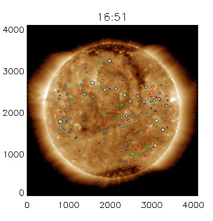
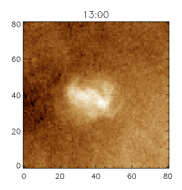
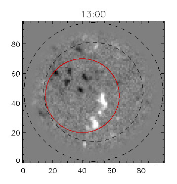
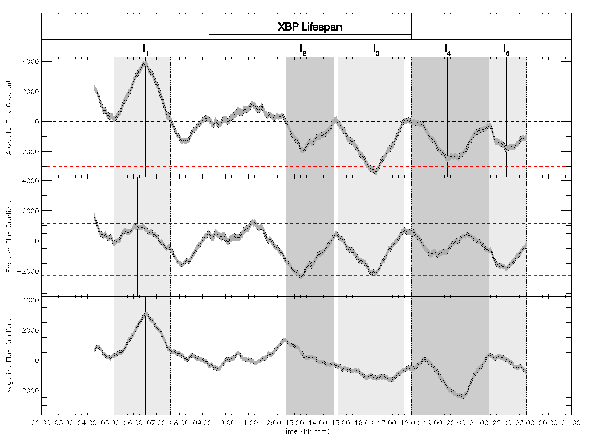

Research Interests
Magnetic Topology
The study of magnetic topology is used to investigate how the solar coronal magnetic field may be configured, providing insight into how the magnetic field evolves with time.
X-Ray Bright Points
X-ray bright points (XBPs) are also known as EUV bright points (EBPs). They appear as small intense brightenings in X-ray and EUV emissions in the solar corona. I developed an algorithm that automatically detects and classifies magnetic events local to an XBP.
Automated XBP Detection
Images from SDO/AIA are collected, smoothed, and passed through a background subtraction. A grouping algorithm is then employed to detect XBPs in the image (circled).

Automated XBP Event Classification
Using SDO/HMI magnetogram data, flux curves are produced to determine when events may be occurring.


